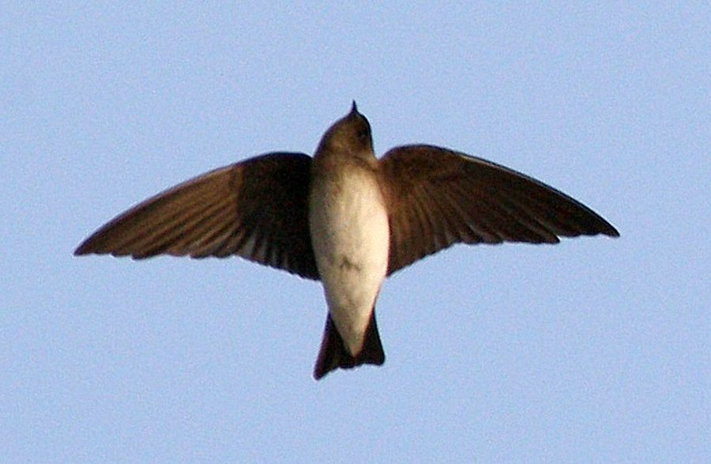

ग्रे-थ्रोटेड मार्टिनGrey-throated Martin
Riparia chinensis · Hirundinidae · BRD-0175

- Scientific name वैज्ञानिक नाम
- Riparia chinensis Gray, 1830
- Family कुल
- Hirundinidae
- Hindi हिंदी
- ग्रे-थ्रोटेड मार्टिन
- Local names स्थानीय नाम
- grey-throated martin, grey throated martin, martin
- Status here यहाँ की स्थिति
- native
- Movement आवागमन
- Resident, here all year
- Known from कहाँ दर्ज
- Others have published records from the Basti–Ayodhya districts बस्ती–अयोध्या के ज़िलों से दूसरों के प्रकाशित अभिलेख
- IUCN IUCN
- LC
- Review समीक्षा
- audited and independently read
When to look कब देखें
Present all year. साल भर मौजूद।
Uses and possibilities उपयोग और संभावनाएँ
Drawn from the documented uses in the profile below, where each is labelled traditional, current or a research lead. All uses →
Tell it apart from इनसे अलग पहचानें
ग्रे-थ्रोटेड मार्टिन / Grey-throated Martin
Riparia chinensis Gray, 1830 — Hirundinidae
ग्रे-थ्रोटेड मार्टिन — पूर्वी उत्तर प्रदेश की नदियों, पोखरों और खुली जमीन पर पाई जाने वाली एक छोटी, तेज़ी से उड़ने वाली गौरैया जैसी चिड़िया, जो घाघरा और राप्ती नदियों के बालू के किनारों में घोंसले बनाती है। इसके गले का हिस्सा हल्का धूसर होता है, जबाकि शरीर ऊपर से गहरा भूरा-धूसर होता है। यह चिड़िया हवा में उड़ते-उड़ते मच्छरों और अन्य छोटे कीटों को पकड़ती है, और इसकी पूरी दिनचर्या आकाश में गुज़रती है। नदियों के नज़दीक बने संस्कृत बुनियादी ढाँचे के बिना, ये मार्टिन कहीं और नहीं रहती।
Quick Identification त्वरित पहचान
| Feature | Description |
|---|---|
| Size | Small swallow; 12–13 cm long |
| Plumage | Dark greyish-brown above; pale grey throat and breast |
| Underparts | Greyish-white belly; often with dark streaks |
| Bill | Small, dark, pointed; adapted for insect capture |
| Rump | Paler than back; visible in flight |
| Tail | Short, slightly forked |
| Behaviour | Highly aerial; often in loose flocks; rapid, agile flight |
Field tip: A small brown swallow with a pale grey throat and breast, always in open areas near water. Found over grasslands and open water, often in loose aggregations. Smaller and darker than barn swallows.
हिंदी — कैसे पहचानें:
बहुत छोटी चिड़िया — हवा में उड़ते-उड़ते कीटें खाती है।
ऊपर से गहरा भूरा-धूसर, नीचे से हल्का।
नदियों के पास हमेशा बड़े झुंड में।
पंखों की तेज़ी से पहचान जाती है।
Morphology आकारिकी
Biometrics:
| Measurement | Range |
|---|---|
| Total length | 120–130 mm |
| Wing (folded) | 85–95 mm |
| Tail | 48–55 mm |
| Bill | 9–11 mm |
| Weight | 12–16 g |
Size: 12–13 cm long; one of the smaller swallows.
Plumage: Upperparts uniform dark greyish-brown. Rump slightly paler than back. Crown and back concolorous.
Throat and breast: Pale grey, creating subtle contrast with darker upperparts. Breast-sides often streaked with brown.
Underparts: Greyish-white belly, often with darker markings on flanks.
Bill: Small, dark, pointed and straight; highly adapted for gleaning insects in flight.
Legs and feet: Small, reddish-brown; seldom used.
Eyes: Dark, with good visual acuity for aerial foraging.
Sexes: Similar; minimal sexual dimorphism.
Juveniles: Duller than adults; feathers with buff edges.
Vocalisations. Call repertoire:
- Contact call: Brief, sharp chi or chip, given in flight.
- Social call: Chattering notes when perched at roost or nest.
- Flight call: Quiet twittering while in aerial foraging flocks.
हिंदी: बहुत शांत चिड़िया। "चिप-चिप" आवाज़ निकालती है। झुंड में उड़ते समय चिड़चिड़ाती है।
Behaviour & Ecology व्यवहार और पारिस्थितिकी
Aerial insectivore: Spends virtually entire day in flight, gleaning small insects from air. Food includes:
- Flies and gnats
- Mosquitoes
- Small moths
- Aerial plankton (minute arthropods)
Flocking behaviour: Highly gregarious, often in loose associations of 5–30 birds. Flight is swift, erratic, and agile.
Feeding: Active foraging from first light until dusk. Often forage at low heights over water and grasslands.
Resting: Perch on wires, branches, or dead stems when not foraging. Spend nights at communal roosts.
Social behaviour: Highly social; pairs and small groups maintain contact with calls in flight.
Swimming and diving: Unlike some swallows, do not typically pick insects from water surface; occasionally dip to drink.
हिंदी: दिन भर हवा में उड़ता रहता है — कीटें खाता है। पानी के ऊपर उड़ता है। नदियों के किनारे बड़े झुंड में रहता है। रात को पेड़ों पर सोता है।
Life Cycle / Phenology जीवन चक्र
Year-round resident: Breeds in the region; local movements follow water availability and insect phenology.
Breeding: April–August; peaks in May–July in Uttar Pradesh. Nests in colonies.
Nest: Burrows in sandy cliffs, riverbanks, and artificial embankments. Each pair excavates 40–60 cm burrow tunnel ending in a small chamber.
Clutch: 3–4 eggs; incubation 14–15 days.
Fledging: Young leave nest at 19–21 days. Multiple broods (2–3) per breeding season possible.
Seasonal movements: Local movements follow monsoon water levels and food availability. Higher densities during breeding season when abundant insects support nesting.
हिंदी: मई-जुलाई में अंडे देता है। नदियों की बालू में सुरंग खोद कर घोंसला बनाता है। 3-4 अंडे देता है। 20 दिन में बच्चे उड़ जाते हैं।
Host Plants or Prey आहार
| Food Type | Examples | Feeding Behaviour |
|---|---|---|
| Small flies | House flies, robber flies | Snatch from air while flying |
| Mosquitoes and gnats | Various Culicidae, Ceratopogonidae | Gleaning aerial plankton |
| Small moths | Microlepidoptera species | Pursuit in flight |
| Aerial arthropods | Minute insects and spiders on wind | Continuous gleaning |
हिंदी: सिर्फ कीटें खाता है — मच्छर, मक्खियाँ, छोटे पतंगे। हवा में उड़ते-उड़ते निगलता है। पानी के ऊपर शिकार करना पसंद करता है।
Predators / Natural Enemies शत्रु
- Avian predators: Shrikes, hobby falcons, Black Drongo
- At nest: Corvids (crows), snakes, monitor lizards
- Mammalian predators: Feral cats, civets
- Parasites: Avian parasites, mites
हिंदी: छोटी चील और बाज़ इसका शिकार कर सकते हैं। कौवे और साँप इसके घोंसलों को तोड़ते हैं।
Agricultural / Human Relevance कृषि प्रासंगिकता
Pest control: Feeds extensively on mosquitoes and other pest insects. Contributes to natural insect population control in agricultural areas.
Breeding habitat: Completely dependent on unmodified sandy riverbanks and embankments. River channelisation and sandbank extraction eliminate breeding sites.
Water-dependent: Requires healthy river systems with stable water levels and insect populations. Dams and barrages affect water flow and nesting sites.
Cultural relevance: Known locally as a river bird. Historically associated with healthy riverine ecosystems.
हिंदी: यह चिड़िया वन्यजीव अधिनियम 1972 की अंतर्गत संरक्षित है। नदियों के स्वास्थ्य का संकेत है। मच्छरों को खाता है, इसलिए मानव के लिए उपयोगी है।
Expected Locally स्थानीय रूप से अपेक्षित
Not a field record. Written from published accounts for eastern Uttar Pradesh. No confirmed local sighting yet — if you have seen it, that is what the atlas needs.
अभी तक स्थानीय पुष्टि नहीं। यह विवरण प्रकाशित स्रोतों से है, किसी अवलोकन से नहीं।
This species is NOT a field record. The distribution below is based on published sources describing where Grey-throated Martin should be looked for in eastern Uttar Pradesh.
Range: Expected along major river systems in Basti–Ayodhya region, particularly the Ghaghra and Rapti rivers. Requires sandy banks and open water.
Habitat preference: Sandy cliffs, riverbanks, and embankments; open grasslands and water bodies for foraging.
Seasonality: Resident year-round with population peaks during breeding season (May–July). Some local movements with water levels.
Published records: GBIF holds published records from the Gangetic floodplains. Mentioned in wetland surveys (Yashmita-Ulman & Singh surveys) from similar habitat.
What a first record would be: A dated photograph clearly showing the bird with grey throat and small size, preferably in a group at a river location, with GPS coordinates and date, submitted through the About page.
हिंदी: यह पक्षी नदियों के पास स्थानीय रूप से अपेक्षित है। साल भर देखा जा सकता है, पर गर्मी में ज़्यादा। बालू के किनारों पर घोंसला बनाता है।
Distribution वितरण
Global range: Asia from India east to China and Southeast Asia. Multiple subspecies across the range.
In India: Distributed across the northern plains from the Himalayas to central India; patchily in the south.
In Uttar Pradesh: Resident along major river systems in northern and eastern districts.
In Basti district / eastern UP: Regular resident along the Ghaghra and Rapti river systems and their associated waterways.
Research Questions शोध प्रश्न
- How do seasonal water level fluctuations in the Ghaghra and Rapti rivers affect nesting success and breeding population sizes?
- What is the diversity and abundance of aerial insects over different habitat types (river, grassland, agricultural) where martins forage?
- Do Grey-throated Martin populations respond to pesticide application in nearby agricultural areas through changes in food availability?
- क्या बरसात के बाद इस चिड़िया की संख्या में बदलाव आता है, और क्यों?
- What proportion of riverbank habitat remains suitable for nesting following dam construction and riverbank modification?
- क्या शहरी विस्तार से इस चिड़िया को नदी के किनारों से दूर जाना पड़ रहा है?
Similar Species मिलती-जुलती प्रजातियाँ
| Species | Key Difference | Hindi | Field Rule | |
|---|---|---|---|---|
| [[barn_swallow\ | Barn Swallow]] (Hirundo rustica) | Larger (17–19 cm); red forehead and throat; deeply forked tail | विदेशी गौरैया | Barn Swallow is larger with red forehead and longer, more deeply forked tail. |
| [[red_rumped_swallow\ | Red-rumped Swallow]] (Cecropis daurica) | Larger; reddish rump; buff undertail coverts | गौरैया | Red-rumped is larger with distinctive reddish rump and buff undertail. |
| {{[[wire_tailed_swallow\ | Wire-tailed Swallow]]}} (Hirundo smithii) | Similar size but has elongated outer tail feathers | \ | Wire-tailed has distinctive lengthened tail feathers. |
Field rule: Grey-throated Martin is small, dark brown above with pale grey throat, always in loose flocks over open areas near water. Barn Swallow is larger, with red face markings and deeply forked tail.
Taxonomy & Classification वर्गीकरण
Original description. Described by George Robert Gray in 1830 in Illustrations of Indian Zoology, volume 1, plate 26, as Hirundo chinensis. Type locality is northern India.
Subspecies. Several subspecies recognised:
- R. c. chinensis Gray, 1830 — Indian subcontinent (occurs in UP)
- R. c. sordida (Strickland, 1851) — central and eastern Asia
Populations in Uttar Pradesh belong to R. c. chinensis.
Family and order placement. Order Passeriformes; family Hirundinidae (swallows and martins). The genus Riparia contains the sand and bank martins, adapted to burrow nesting.
Phylogenetic notes. Closely related to Barn Swallow and other swallow species. Molecular studies place it within a clade of Old World swallows adapted to open habitats.
IUCN status rationale. Assessed as Least Concern (LC) globally. Populations remain widespread and relatively stable. Habitat loss from river modification is a concern in some regions, but populations persist in areas with suitable nesting sites.
हिंदी: यह चिड़िया एशिया भर में मिलती है। नदियों में रहती है। कानून से संरक्षित है।
Photo Gallery फोटो गैलरी
No photos yet — add field photos to media/species/grey_throated_martin/ and run node scripts/sync_photos.js.
Wanted photos:
- Adult in flight over water
- Colony at sandy riverbank
- Birds at nest entrance
- Flock in aerial formation
- Individual perched on wire
References संदर्भ
- Gray, G. R. (1830). Illustrations of Indian Zoology, Chiefly Made from Drawings and Original Sketches by Major-General Thomas Hardwicke. Vol. 1. Printed for the Author, London. Plate 26.
- Ali, S. & Ripley, S. D. (1972). Handbook of the Birds of India and Pakistan. Vol. 5 (Crows to Finches). Oxford University Press, Delhi. Pp. 223–225.
- Cramp, S. (ed.) (1988). Handbook of the Birds of Europe, the Middle East and North Africa: The Birds of the Western Palearctic. Vol. 5 (Warblers to Dippers). Oxford University Press. Pp. 356–369.
- Turner, A. & Rose, C. (1989). A Handbook to the Swallows, Martins and Saw-wings of the World. Christopher Helm, London. Pp. 145–149.
- GBIF Occurrence Data — Riparia chinensis, India.
- IUCN Red List (2023). Riparia chinensis — BirdLife International assessment. IUCN, Cambridge. Status: Least Concern.
Source file: species/fauna/birds/grey_throated_martin.md